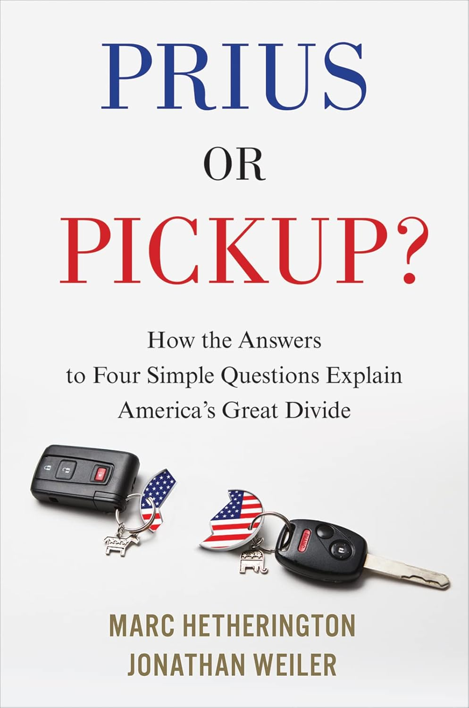

A Fresh Look at American Divides

Book published in 2018
Distinct worldviews became aligned with contemporary partisan identities
A more security-focused perspective, seeing the world as dangerous, or rather a more open perspective, viewing the world as fundamentally good
Even physiological differences!
Measuring worldviews with only four simple questions
Which of the following two qualities is more important for a child to have?
Fixed
Fluid
Lifestyle: Observable behaviors and consumption choices that reflect an individual’s personality within a given context (Ouellet, 2024)
Formation of lifestyle enclaves
To what extent do the relationships observed by Hetherington and Weiler (2018) between worldview, partisan identity, political ideology, and lifestyle preferences persist in the current political context?
A scale going from 0 = Fixed (if the participant chose 4 Fixed worldview traits) to 1 = Fluid (if the participant chose 4 Fluid worldview traits).
Intermediate scores: Mixed
Describing and comparing this scale with the 2018 one
Independent variable for a couple of analysis
Original Study
29% of respondents at either extreme
Dividing the scale in two:
Fixed-side: 42%
Fluid-side: 32%
Midpoint: 26%
2024 Analysis
29% of respondents at either extreme
Dividing the scale in two:
Fixed-side: 23%
Fluid-side: 53%
Midpoint: 24%
Subsequent analyses will use percentage-based comparisons within each worldview category
Caveats: Self-Selection Bias, No Political Issues, Relatively Small Sample (They are divided in 3 categories)
Worldviews continue to be a powerful indicator of both political alignment and lifestyle choices in 2024.
The study reinforces that polarization is deeply embedded in American society. Lifestyle is divided.
These divisions may further deepen social fragmentation, affecting social cohesion and democratic governance.
Sarah-Jane Vincent
sarah-jane.vincent.1@ulaval.ca
MPSA 2025